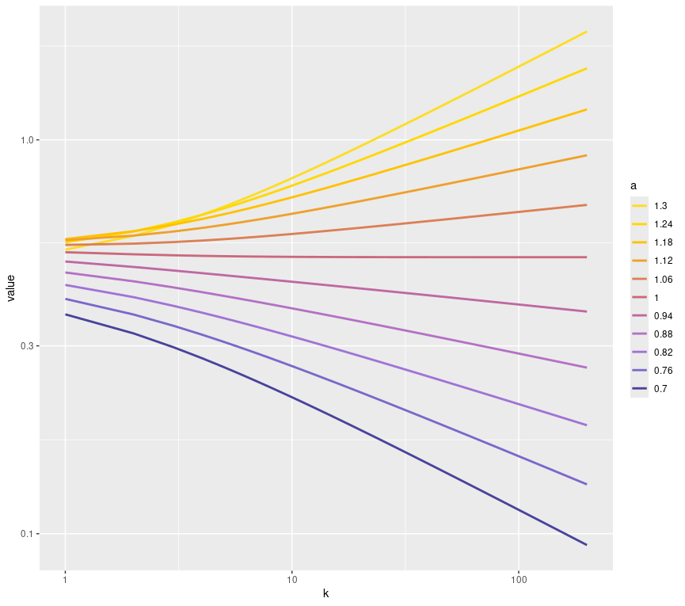
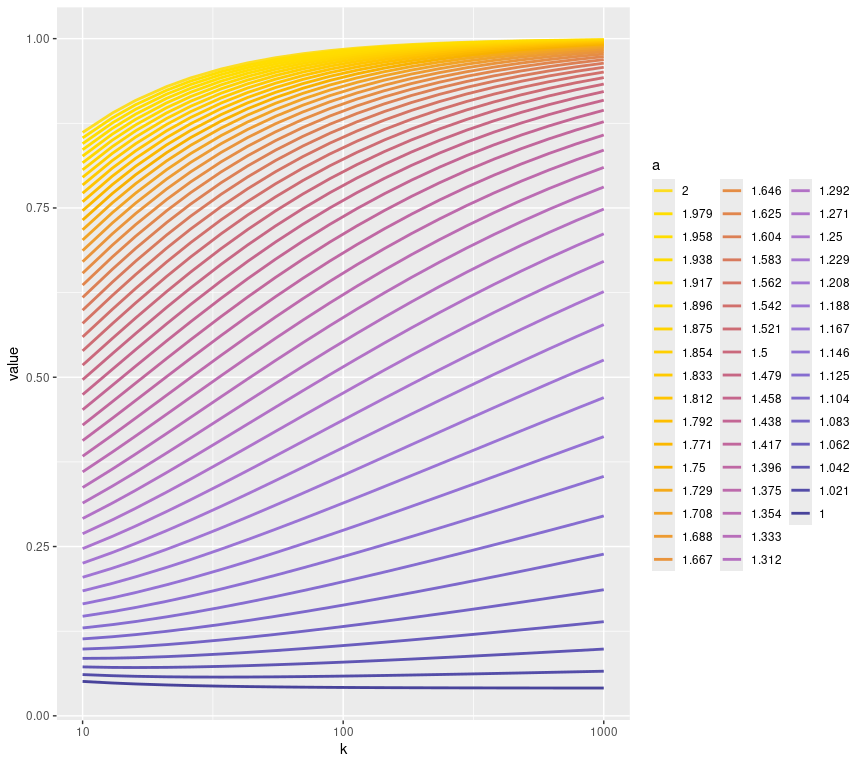

Annual Progress Review
1 Research Progress
This research has been focused on networks and modelling how they grow. The main focus has so far been the degree distribution of both real world networks as well as networks simulated from various models.
Degree Distribution of Real Networks
The research began by looking at the degree distributions of real networks, with the aim of gaining some insight to how they may have grown and will continue to. Looking at Figure 1 it is clear that the degree distribution of networks can have various different shapes on a log-log scale. Some look almost linear, but others look more concave.
Generative Network Models
Network generation is a complex subject and so finding a fairly simple way of modelling how real networks might have grown is very attractive and the one of the reasons for the popularity of the Barabási-Albert model.
Barabási-Albert Model
First introduced by Barabási and Albert (1999), this is a simple network growth model whereby, when a vertex is added to the network it connects to those already in the network with probability proportional to their degree. More formally, starting with \(m_0\) nodes , the edges between them chosen arbitrarily such that each node has at least one link. The network then develops using two steps:
Growth
At each time step, add a node to the network that will connect to \(m\le m_0\) nodes (already in the network) with \(m\) edges.
Preferential Attachment
The probability that an edge from the new node connects to node \(i\) is proportional to its current degree \(k_i\) i.e \(k_i/\sum_{j}k_j\).
This model has been proven through various means to produce a network that follows a power law with exponent 3. The method used in Barabási, Albert, and Jeong (1999) is unclear and it is not stated where some of the equations used come from. So, as part of reviewing the literature, we set out to make the proof of this more thorough with the idea of applying the method to more complex models.
Degree Distribution of the Barabási-Albert Model
We first consider the degree of a particular vertex in the network \(k_i\), and notice that at any given time step the degree of vertex \(i\) can gain up to \(m\) edges with each edge connecting with probability \(p_i(t) = k_i/\sum_{j}k_j\). This means that the number of edges gained by vertex \(i\) at time \(t\) can be modeled by a binomial random variable \(R_i(t)\).
Consider the Hawkes’ process with random intensity at time \(t\) given by \(R_i(t) \sim \text{Bin}(m, p_i(t))\) such that:
[USE RESULTS FROM BOOK]
General Preferential Attachment Model (GPA)
The Barabási-Albert (BA) model produces a power law degree distribution with exponent 3 for any choice of \(m\), it is not possible to modify the parameters in the model to produce a heavier or lighter tailed degree distribution. This leads us to consider a modification of the BA model through the generalisation of the preferential attachment function, instead of weighting each existing vertex proportional to their degree we instead weight them by a function of their degree.
Growth
At each time step, add a node to the network that will connect to \(1\leq m\le m_0\) nodes (already in the network) with \(m\) edges.
Preferential Attachment
The probability that an edge from the new node connects to node \(i\) is proportional to a function of its current degree \(k_i\) i.e \(g(k_i)/\sum_{j}g(k_j)\).
For some \(g: \mathbb{Z^+} \rightarrow \mathbb{R}^+\).
Results for GPA model
Through the same thought process as the proof for the BA model we can obtain the differential equation:
\[ \frac{dk_i}{dt} = \frac{mg(k_i)}{\sum_j g(k_j)} \]
However where in the case of the BA model, the denominator can be simplified to \(2mt\), the same does not apply for the GPA model since \(g\) could take many forms that don’t allow the sum to be simpilfied. To attempt to deal with this issue we require some additional tools.
Useful Result
Generating distribution via differential equation.
Consider a process where vertices, labelled \(i \in \mathbb Z^+\),with degree \(K_i\) are added to a network at times \(T_i\sim U(0,t)\) such that \(K_i\) is asymptotically distributed with cumulative distribution function \(F\) and probability distribution function \(f\). Then we can write that:
\[ (1-F)^{-1}(t_i/t) = k_i \sim F \]Differentiating this with respect to \(k_i\), we can obtain:
\[ \frac{dk_i}{dt} = \frac{1}{th(k_i)} \]Where \(h\) is the hazard function associated with \(F\).
We now have two different formulae for the derivative of \(k_i\) with respect to time which can be obtained to find to get a form for the asymptotic hazard function of \(k_i\).
\[ h(k_i) = \frac{\sum_jg(k_j)}{mtg(k_i)} \]
Unfortunately we are still left with the quantity \(\sum_j g(k_j)\), which as previously mentioned cannot be evaluated analytically. This is where we looked to approximate it by noticing that there is an alternate form:
\[ \sum_j g(k_j) = N_t\sum_k p_t(k)g(k) \]
where \(N_t\) is the total number of vertices in the network at time \(t\), \(p_t(k)\) is the proportion of these vertices with degree \(k\) at time \(t\), and the sum is now over all unique degrees instead of all unique vertices. Given that we start with \(m_0\) vertices in the network and are adding one vertex at every time step, we can write that \(N_t = m_0+t\).
If we now look at the asymptotic behaviour of the denominator we see that:
\[ \sum_jg(k_j) = (m_0+t)\sum_kp_t(k)g(k)\rightarrow t\sum_kf(k)g(k) = t\mathbb E_f[g(K)], \quad \text{as } t\rightarrow\infty \] This means that the hazard function can be approximated by:
\[ h(k_i) \approx \frac{\mathbb E_f[g(K)]}{mg(k_i)} = \frac{\lambda^*}{mg(k_i)} \]
Using this we can use standard results for discrete distributions to obtain an approximation of \(f\). That is:
\[ f(k_i) = h(k_i)\prod_{j=1}^{k_i-1}(1-h(k_i)) \approx \frac{\lambda^*}{mg(k_i)}\prod_{j=1}^{k_i-1}\frac{mg(j) - \lambda^*}{mg(j)} \]
where \(\lambda^*\) is the solution, if it exists, to:
\[ m = \sum_{k=1}^\infty\prod_{j=1}^{k-1}\frac{mg(j) - \lambda}{mg(j)} \]
The next step of this was to find out exactly how approximate this is, but it was at this point that we came across [NETWORKS BOOK] which contained the following result that looks similar to the one that we have obtained. Instead of considering any possible \(m\), this result is only for \(m=1\) which will generate a tree.
Degree Distribution of the GPA Model
Let \(g(k)\) be the weight of a vertex with degree \(k\) which will act as the preferential attachment function. The tree evolves by attaching the \((t+1)\)st vertex to vertex \(i\) with probability proportional to \(g(k_i(t) - 1)\) where \(k_i(t)\) is the degree of vertex \(i\) at time \(t\).
Then letting \(\lambda^*\) be the solution, if it exists, to the equation:
\[ 1 = \sum_{n=1}^\infty\prod_{i=0}^{n-1}\frac{g(i)}{g(i)+\lambda} \]
The degree distribution converges to \((p_k)_{k\ge0}\), as proved by [RUDAS], where:
\[ p_k = \frac{\lambda^*}{g(k)+\lambda^*}\prod_{i=0}^{k-1}\frac{g(i)}{g(i)+\lambda^*} \]
Comparison of two formulas
[FIGURE] shows that for almost all forms of preferential attachment function the formula from [BOOK] is much more accurate that the approximation that we have derived. Knowing this, from now on we will use this formula when investigating the effects of changing the preferential attachment function on the heavy tailedness of the degree distribution.
Discrete Extreme Value Theory
[STILL NEED TO WRITE THIS SECTION] but here are two plots that may be included. The first showing the value of \(\Omega(k)\) for preferential attachment functions of the form \(g(k) = k^\alpha\) for \(\alpha \in(0.7,1.3)\). The second shows the value of \(\frac{\bar F(tk)}{\bar F(k)}\) for functions of the same form but for \(\alpha \in (1,2)\) this time.


References
Barabási, Albert-László, and Réka Albert. 1999. “Emergence of Scaling in Random Networks.” Science 286 (5439): 509–12. https://doi.org/10.1126/science.286.5439.509.
Barabási, Albert-László, Réka Albert, and Hawoong Jeong. 1999. “Mean-Field Theory for Scale-Free Random Networks.” Physica A: Statistical Mechanics and Its Applications 272 (1): 173–87. https://doi.org/https://doi.org/10.1016/S0378-4371(99)00291-5.